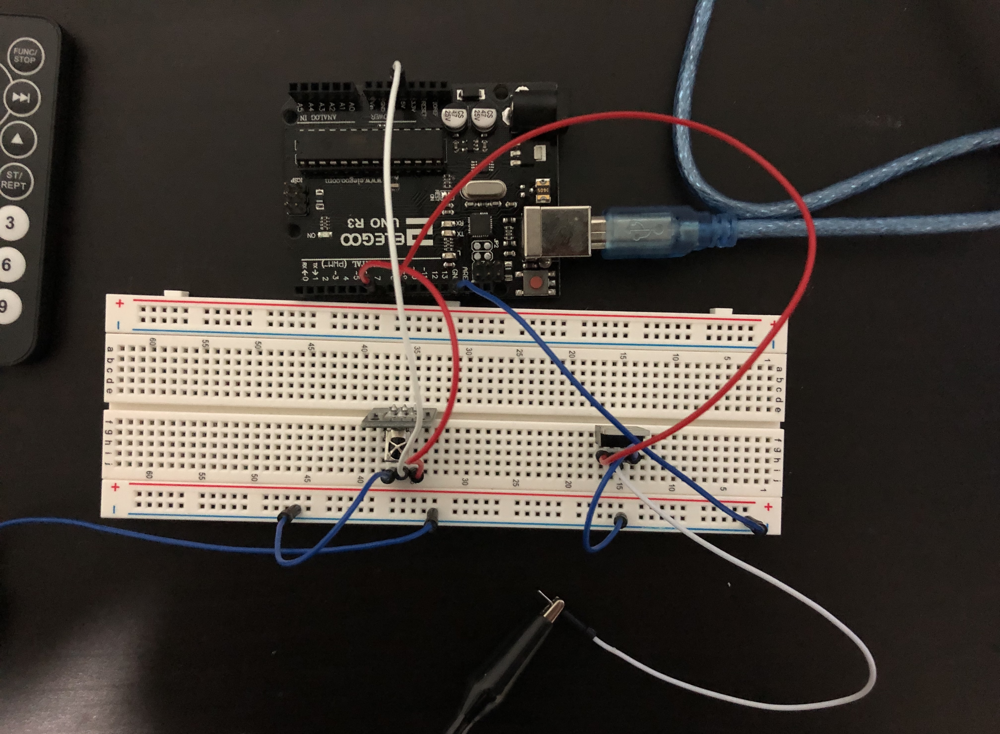
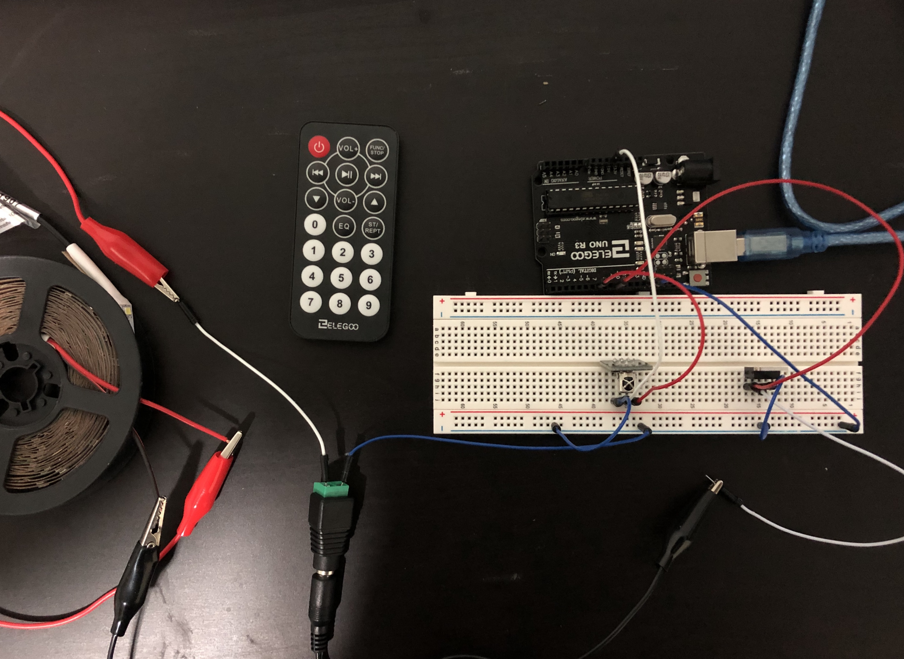
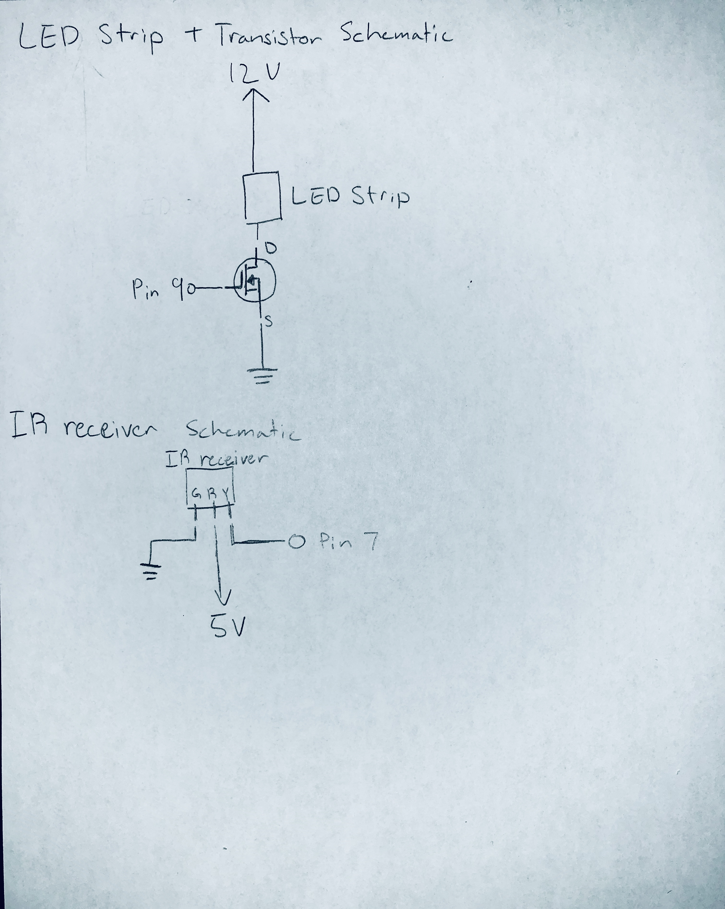

Seung Won's Assignment 4: High(er) voltage and transistors!


The gifs above display the behavior I created using the arduino, a N-MOFSET transistor, LED strip and a IR receiver. In this case the receiver captures signals sent from a remote and uses those signals to create different behaviors in the LED strip. If 1 was pressed it would blink slowly then blink quickly, if 2 was pressed then it would slowly become brigher then slowly fade back into being off.
The code used to accomplish this had some code that was modified from the IR receiver code that we worked on in class for lecture six along with some code that was used in the earlier Blink! and Fade! assignments.
// Includes the infrared remote library that we want to use for this program
#include <IRremote.h>
// constant variable set to the digital pin that will receive data from the infrared sensor
const int RECV_PIN = 7;
// constant variable set to the digital pin that controls the transistor and LED strip in turn
const int TRAN_PIN = 9;
// sets the receiverPin as a irrecv object
IRrecv irrecv(RECV_PIN);
// creates a variable called results that will store the code given by the receiver to be used by the irrecv object
decode_results results;
void setup() {
// sets the speed of the data upload to 9600 bits per minute
Serial.begin(9600);
// starts the IR receiver
irrecv.enableIRIn();
// will make LED on the arduino blink every time a signal is received
irrecv.blink13(true);
// sets the LEDPin to output so it can be controlled and does not automatically turn on the LED strip
pinMode(TRAN_PIN, OUTPUT);
}
void loop() {
// the decode returns true if a signal is received. If a signal is received then the signal is stored as a HEX code in results
if (irrecv.decode(&results)){
// Prints to the serial moniter the HEX code for the signal received. Used to verify a signal has been received visually
Serial.println(results.value, HEX);
// if the signal received was caused by pressing 1 the LED strip will blink slowly once and then quickly once
if(results.value == 0xFF30CF) {
// sets the value for the pin that controls the transistor's gate voltage to 0
analogWrite(TRAN_PIN, 0);
// waits for 1 second
delay(1000);
// sets the value for the pin that controls the transistor's gate voltage to 100
analogWrite(TRAN_PIN, 100);
// waits for 1 second
delay(1000);
// sets the value for the pin that controls the transistor's gate voltage to 0
analogWrite(TRAN_PIN, 0);
// waits for 1 second
delay(1000);
// sets the value for the pin that controls the transistor's gate voltage to 100
analogWrite(TRAN_PIN, 100);
// waits for 0.1 seconds
delay(100);
// sets the value for the pin that controls the transistor's gate voltage to 0
analogWrite(TRAN_PIN, 0);
}
// if the signal received was caused by pressing 2 the LED strip will slowly brighten then fade back down
if(results.value == 0xFF18E7) {
// for loop that starts the i value at 0 then rises to 255 in increments of 1
for(int i = 0; i < 256; i++) {
// sets the value of the pin that controls the transistor's gate voltage to the value of i
analogWrite(TRAN_PIN, i);
// waits for 0.01 seconds
delay(10);
}
// for loop that starts at the i value 256 then falls to 0 in increments of 1
for(int i = 256; i >= 0;i--){
// sets the value of the pin that controls the transistor's gate voltage to the value of i
analogWrite(TRAN_PIN, i);
// waits for 0.01 seconds
delay(10);
}
}
// resets the receiver so it can get a new signal
irrecv.resume();
}
}
For this code I created two variables. RECV_PIN referred to the GPIO that was connected to the IR receiver and TRAN_PIN referred to the pin that was connected to the gate of the N- MOFSET transistor. In the actual code it would wait until the IR receiver got a signal from the remote. Then if it did it would print it to the serial so that I could check if a signal actually came because that was something I had struggled to verify while testing it and had to spend a lot of time debugging. Then depending on what button was pushed it exhibited different behaviors. If 1 was pushed then it would blink slowly then quickly. If 2 was pushed then the LED strip would slowly fade in and out once.
 The images above display the circuit used for this project. In the images we see the transistor connected at three points; first to the 9 pin at the gate, then the LED output at the drain, and finally to ground at the source. The LED strip is connected to the transistor by its output wire and also to the 12V adapter by the input wire. The IR receiver is connected to ground at G, to the 5V pin on the arduino at R, and to the 7 pin at Y.

Finally, the image above shows the schematics of the LED strip, transistor, and IR receiver which all work together to create the product for this assignment.
For this assignment some calculations outside of the normal calculations we make for resistors were needed. Because the transistor can only handle a max current of 32A we had to make sure that the current drawn by the LED strip would not be higher than what could be handled by the transistor. To calculate the current drawn by the LED strip we use the formula; P = V*I. By looking at the data provided on the box of the LED strip we can see that it has a power of 18 Watts and a voltage of 12, then by plugging in the values provided into the formula we are able to solve for the current that the LED draws, which is 1.5A which is much lower than the max that the transistor can handle meaning that it is okay to use this transistor with the LED strip.